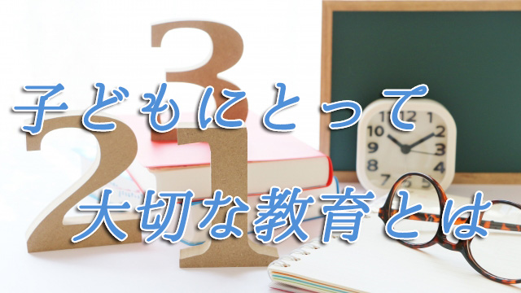

子どもの教育で大切なことは何だろう？
日本の親たちは子どもの教育にとても熱心であることは間違いないが、ただその熱心さが私などから見ればエネルギーのムダ使いに感じることが多い。
ムダという言葉はキツ過ぎるかも知れないが、子どもに良い教育をという熱意が必ずしも子どものために役立っていない、あるいはかえって子どもの意欲を削っている例を多く見てきたからだ。
たとえば多くの親は、子どもの可能性を考えて幼いときから様々な習いごとに通わせたり、早期教育が大事と英会話教室に行かせたりする。これは一見良いことに思えるが、問題は習いごと（教育としての）をさせる親の動機にある。
子どもの能力や性格を見極めた上でというより、皆が習いごとをしているから我が子にも何かやらせなければという、世間体に促されているように見える。そこには子どもに何もやらせないのは「親としての責任を果たしてないのではないか」という恐れがある。罪の意識に近いともいえる。
つまりこれは子どものためというより親のアリバイ作りであって、これでは子どものためになっていない。言葉は悪いがこういう親の心理につけこむことで多くの「子ども向け教室」は繁盛していることを忘れてはならない。
さらにもうひとつ。子どもに早期教育（勉強系）を施す親の動機について。今は小学校でも英語の授業が導入されていることもあって、幼児期から英語を習わせたり漢字や算数の計算を教える教室に通わせる傾向がある。
実際、幼稚園などでも英語や算数などを教えることを売りにするところが増えている。
こういう早期教育があまり効果的でないことは以前の記事（＝ココ「子どもをもっとゆっくり育てたい」）で触れたので繰り返しは避けるが、問題は親の動機が「成績を上げたい」という目先の利益（点数主義）にあることで、当然子どもに対しても悪影響を与えることになる。
最初は喜んでやったとしても、所詮は親のエゴで「やらされた勉強」に過ぎない。小学校高学年～中学校くらいで勉強ギライになったり、それどころか高校大学そして社会人と自発的勉強が必要になるときにすっかり学習意欲が衰えている者も少なくない。私はそんな例を飽きるほど見てきた。
知識を与えるより大切なこと
それなら子どもの能力を伸ばすのに必要なこととは何だろう。そのために親ができることは何か。
その問いに答える前にいったん原点に戻って本当に子どもの教育に必要なものとは何か、ゼロベースで考えてみたい。
そもそも教育という行為は知識や技能、技術を教え込むことだろうか。何かを積み上げていくことなのだろうか。そういう発想だから早い時期に学校教育の先取りをすれば良いという考えにつながるのだろう。
しかしこれら外から与えられたものは、自らの内面からわき起こる興味に基くものでない故に定着することはない。誰でも分かる通り、人は自ら「その気」になったときしか勉強であれスポーツであれ真に身につけることはできないからだ。特に勉強系はそうだ。
幼い子供は意味や背景を考えず何でも記憶できてしまう。それを見て「ウチの子は天才かも！」と喜ぶ親もいるがその実子どもは「形」だけ覚えて深く考えず、かえって頭脳の柔軟性を損なっていることには気づかない。
だから逆なのだ。外から与えて知識を増やすことではない。知識を与えず知識欲を刺激すること。「ナゼか？」と常に問う姿勢をこそ大切に育てるべきだ。人は「分かった」と思うことは深く知ろうとはしない。これがいちばんダメな態度であるのに多くの人は物知り博士であろうとする。これは勉強に限らず運動（スポーツ）でも同じだ。常に疑問をもち、表面的理解から一歩踏み出して自分なりの創意工夫という創造性を発揮する者が最終的に深い境地に達する。
勉強でもスポーツでも仕事でも、活躍し続ける人は皆こういう姿勢を保持している。
要するに知識欲（知的好奇心）や学ぶ意欲が旺盛な人たちである。こういう人間を育てるには外から与えるのではなく内奥にある好奇心を引き出すのが良い。これまた誰でも知っているように幼い子どもは好奇心でいっぱいだ。有名な「空はなぜ青いの？」から始まって「男と女がいるのはなぜ」「宇宙の始まりは？」「人はなぜ死ぬの？」という根源的な問いに至るまで子どもは様々なことを知りたがる。
こういうとき親は自分が答えられない（誰でも答えられない）からといって、子どもの問いを無視したり軽視しがちだが、こういうシンプルで根源的疑問こそ大切に扱わねばならない。正解を求める必要はない。一緒に共感し考える姿勢を示せば良い。
「本当だね。不思議だね」「一緒に図書館で調べてみようか」という姿勢だ。忙しければ正直に「お母さんも分からないから分かったら教えてね」と言えばいい。子どもは喜んで調べるだろう。
このように小学校高学年くらいまでは、余計な知識をつめこんで知的欲求を殺さないよう親は配慮すべきだ。この時期は学校のテストの点など気にする必要はない。しかし知的好奇心そのものは常に大事に育てるよう注意したい。たいていの親は逆をやっている。つまり通知表や点数ばかり気にかけ子どもの素朴な疑問に「そんなことばかり言ってないでちゃんとベンキョウしなさい」などとせっかくの知的欲求の芽を摘んでいる。
学校の勉強はどうでも良いと言っているのではない。幼いときに知的好奇心を十分に育てていれば最終的に勉強能力（大学入試や社会人としての仕事能力）にも優れた人物になると言いたいのだ。
今回の話は分かる人には当たり前の話でしかないが分からない人にはまったく理解の外かも知れない。
ただ、私は十分な経験と根拠に基いてこの話をしている。立派な経歴や見識がある人でも我が子の教育ということになると、たちまち近視眼的にしか考えなくなる人も多い。なので子どもの教育をいまいちど根本から見つめ直して欲しいという思いで書いた。
次回も同じテーマで話を進めたい。